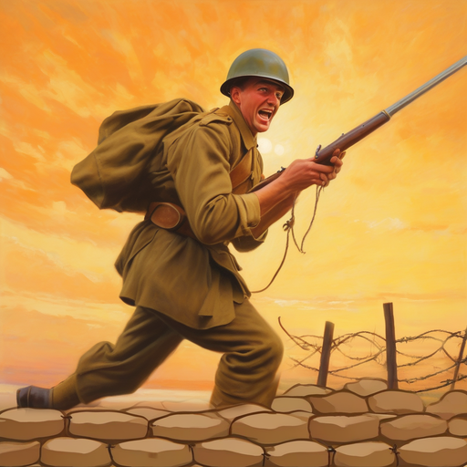
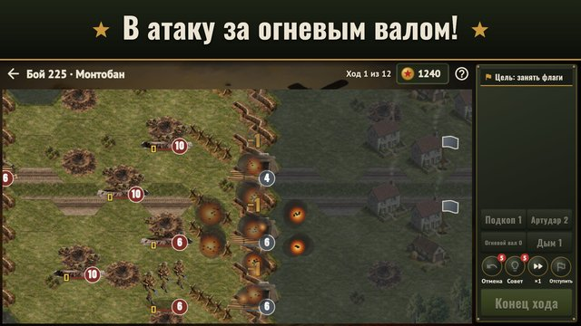

Окопный фронт
Рассвет, свисток — и рота поднимается из окопа на ничейную землю. Впереди проволока и пулемёты, за спиной огневой вал твоих пушек.
«Окопный фронт» — пошаговая стратегия о Первой мировой войне 1914–1918 годов: окопы, артиллерия, газ, первые танки и конница. На штабной карте выбирай, какой регион брать следующим. В штабе собери отряды и подготовь атаку, но помни: долгая подготовка торопит вражеские резервы. В бою веди отряды по гексам: сапёры режут проходы в проволоке, пехота идёт за огневым валом, а взятый окоп нужно удержать против контратаки.

- Три кампании: за Россию — от Гумбиннена и Галиции через Карпаты, Великое отступление и Эрзурум к Брусиловскому прорыву; за Францию — от Марны через Верден, Сомму и Шмен-де-Дам к перемирию 11 ноября; за Британию — от Монса и Ипра через Галлиполи, Сомму, Пашендаль и Камбре к Амьену.
- 20 глав, 160 боёв и 41 контратака на штабных картах; 20 особых исторических боёв со своими правилами: Гумбиннен, Осовец, Эрзурум, Луцк, такси Марны, форт Во, форт Дуомон, Гелювельт, высадка у мыса Геллес, Флер-Курселет, Мессин, Камбре и другие.
- Война в окопах: проволока и сапёры, блиндажи, огневой вал, пулемёт в окопе, ходы сообщения, мины под гребнем, газовая атака противника и противогазы, захваченный окоп смотрит не в ту сторону.
- 15 видов войск: пехота, штурмовые группы, пулемёты, гренадеры, огнемётчики, снайперы, миномёты, сапёры, конница, самокатчики, броневики, полевые пушки, тяжёлые гаубицы и танки — у Британии и Франции свои, у России их нет.
- Всё по годам войны: в 1914 году красные штаны и конные атаки, в 1915 — газ и каски, в 1916 — первые танки, в 1918 — лёгкие «Рено» и штурмовые группы врага.
- Фронтовая сводка перед каждым боем: две-три строки настоящей истории места и даты.
- Погода и время суток: дождь и грязь, туман, снег, жара и ночные бои; три уровня сложности, и подготовка здесь важнее числа.
- Штаб между боями: ветераны со званиями, которых ты знаешь по фамилиям, их письма домой; командир с деревом навыков, медали и справочник вооружения.
- Операция дня с архивом за неделю, ежедневные задания и испытания в пройденных боях.
- Музыка тех лет: марши и сюиты 1890-х–1910-х годов; игра без интернета, на русском и английском.
Без крови и без жестокости: только история фронта. По желанию — одно напоминание, если не заходил неделю; выключается в настройках. Свисток уже у губ, командир!